Trayectoria
13 etapas · 16 años de carrera
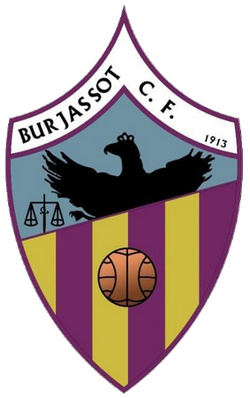
Burjassot CFPrimer banquillo sénior. Entrenador nacional más joven de España con 25 años. El comienzo de una carrera construida desde la convicción.
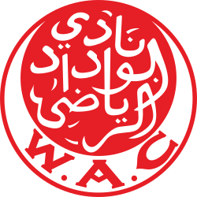
Wydad AC · MarruecosAyudante de Benito Floro. Primera experiencia internacional. Champions africana. Una apertura de horizonte que marcaría su visión global del fútbol.
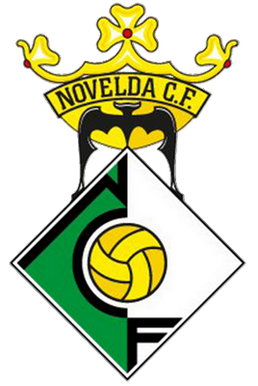
Novelda CFRegreso al fútbol valenciano. Consolidación metodológica y asentamiento de las bases del estilo canalleta.
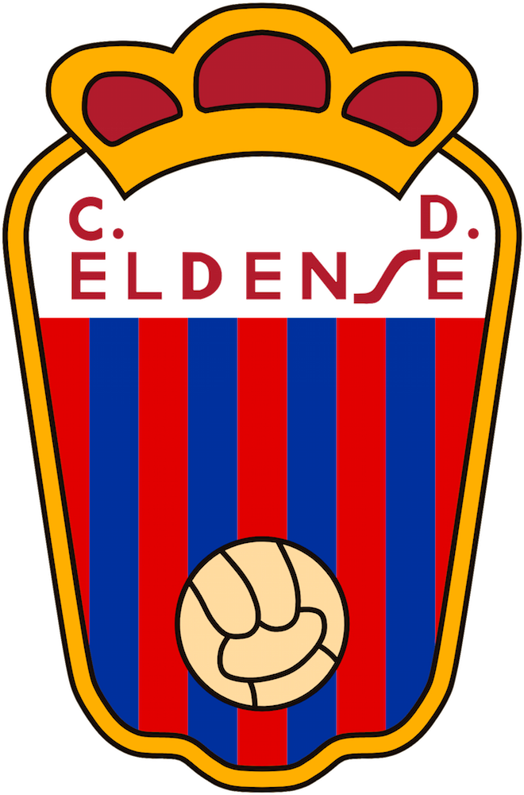
CD EldenseSegunda B. Salvación agónica. Primer contacto con el fútbol de categoría nacional. La presión como combustible.
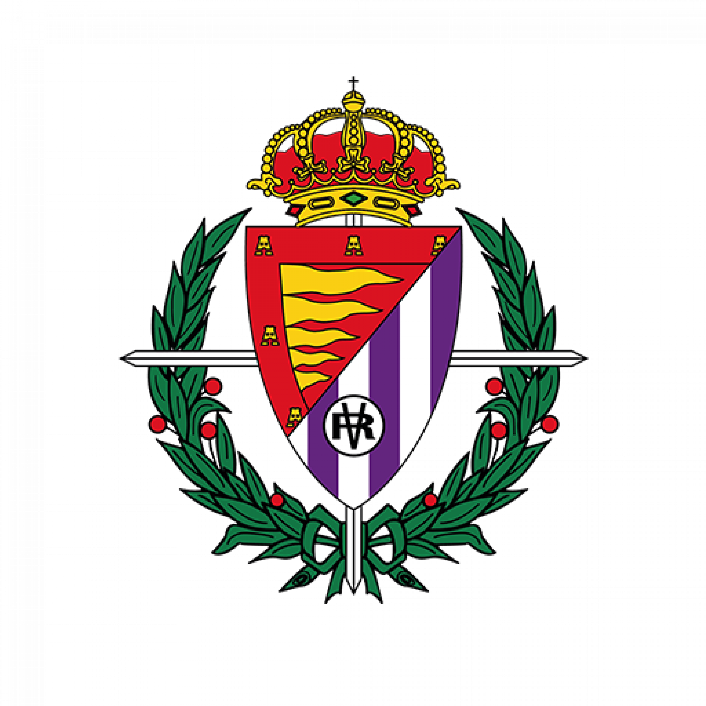
Real Valladolid PromesasFilial en Segunda B. Sexto clasificado en el Grupo I. Formación y desarrollo de talento joven bajo la exigencia del fútbol profesional.
Ayudante de Miguel Ángel Portugal en Segunda División. Aprendizaje en un entorno profesional de máxima exigencia.
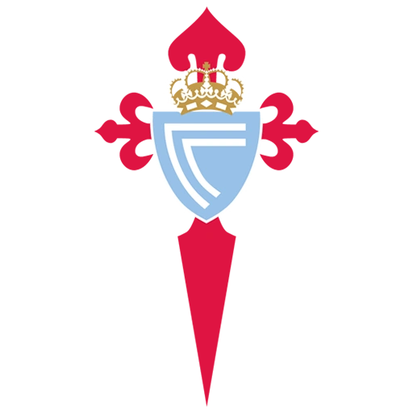
RC Celta BPremio Ramón Cobo RFEF · Mejor Entrenador Grupo I Segunda B 2017-18. Fase de ascenso a Segunda División. 82 partidos al frente del filial celeste. El reconocimiento de la élite.
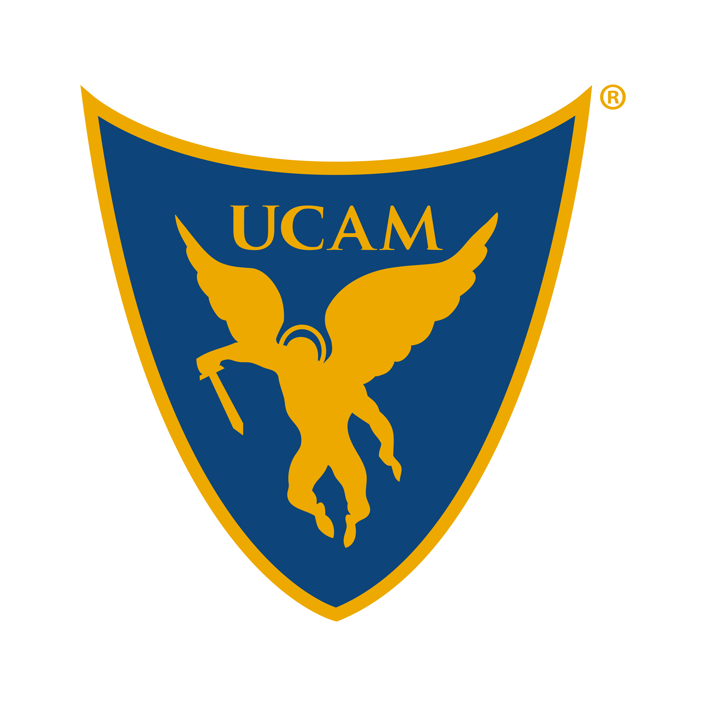
UCAM MurciaSegunda B. Experiencia en un contexto exigente y de alta presión. Demostración de resiliencia y adaptabilidad táctica.
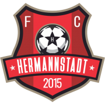
FC Hermannstadt · RumaníaEntrenador más joven de la Liga I rumana con 35 años. Primer salto al fútbol del Este europeo. Adaptación cultural y táctica en un entorno completamente nuevo.
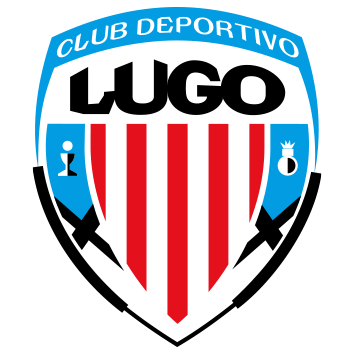
CD LugoDebut en el fútbol profesional español. Dos permanencias consecutivas en Segunda División con presupuesto ajustado. Un logro que consolidó su proyección nacional.
 Albacete Balompié
Albacete Balompié
64 puntos · 6.º · Playoff de ascenso. Equipo más goleador de la categoría con 58 goles. Temporada de referencia nacional con el penúltimo presupuesto de Segunda División.
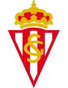
Real Sporting de GijónSegunda División. Experiencia en uno de los clubes históricos del fútbol español. El Molinón como escenario de una nueva etapa profesional.
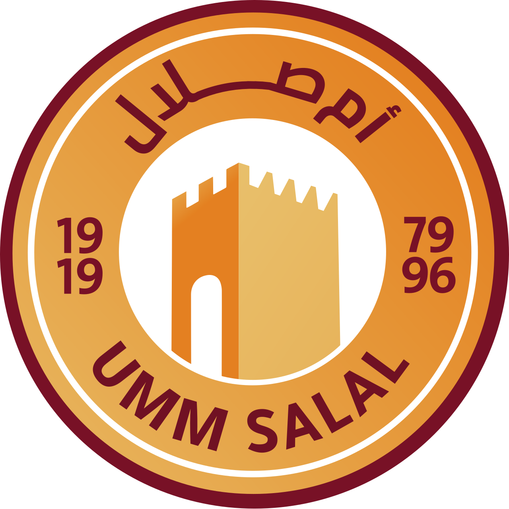
Umm Salal SC · QatarQatar Stars League. Nuevo desafío internacional. El estilo canalleta cruza fronteras y encuentra un nuevo continente donde crecer.